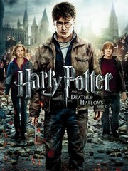
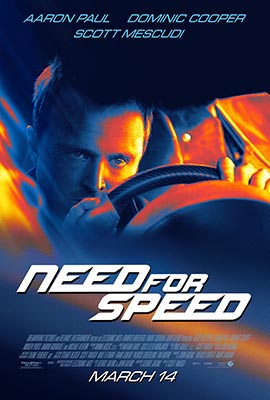
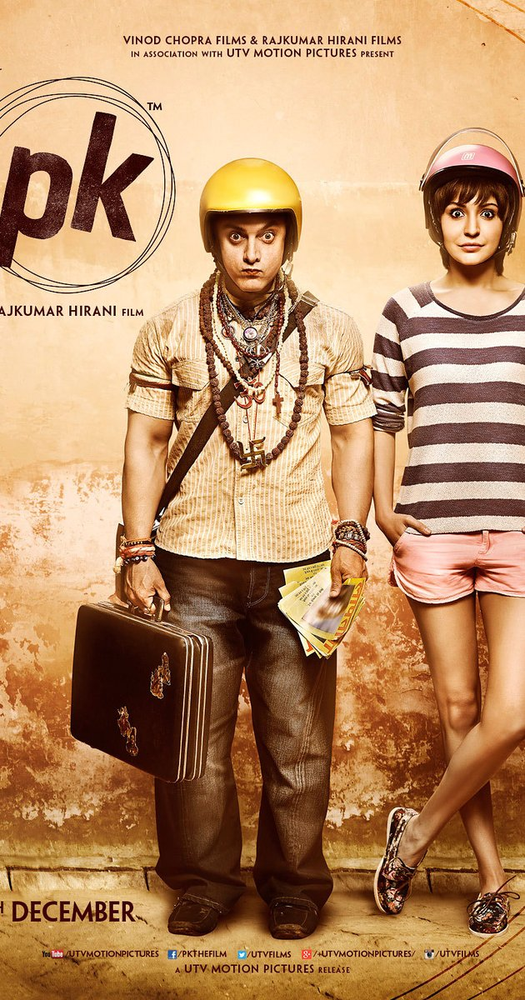
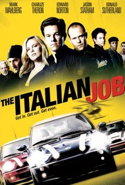

| Harry Potter

Genre:Family,Adventure,Fantasy
Release:2001–2011
Harry Potter is a British-American film series based on the Harry Potter novels by author J. K. Rowling. The series is distributed by Warner Bros. and consists of eight fantasy films, beginning with Harry Potter and the Philosopher's Stone (2001) and culminating with Harry Potter and the Deathly Hallows – Part 2 (2011). A spin-off prequel series will consist of five films, starting with Fantastic Beasts and Where to Find Them (2016). The Fantastic Beasts films mark the beginning of a shared media franchise known as J. K. Rowling's Wizarding World.
|
Need for speed

Genre:
Release:March 7, 2014
Need for Speed is a 2014 American action film directed by Scott Waugh, written by George Gatins and John Gatins and produced by DreamWorks and Reliance Entertainment.[3] Based on the video game series of the same name by Electronic Arts, the film stars Aaron Paul as street racer Tobey Marshall, who sets off to race cross-country, as a way of avenging his friend's death at the hands of a rival racer (Dominic Cooper). |
| Pk

Genre:Comedy,Drama, Fantasy
Release:2014
A stranger in the city asks questions no one has asked before. His childlik curiosity will take him on a journer of love,laughter and letting go.
|
Italian job 
Genre:Action,Crime,Thriller
Release:2003
After being betrayed and left for dead in Italy.Charlie Croker and his team plan an elaborate heist against their former ally.
|